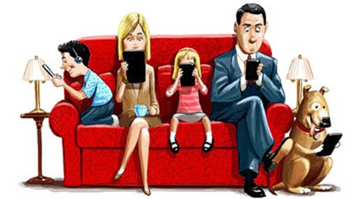

Es una condición de adicción a Internet que se observa en menores y en adultos. Su indicador más significativo es la «conexión compulsiva» que se concreta en la necesidad de tener que conectarse con frecuencia muchas veces al día. Pero además son indicadores de este problema: la dispersión de la atención, la búsqueda constante de contenidos relacionados con ciertos gustos o adicciones, la creación de distintas identidades, la sustitución de lo real por lo vivido en entornos virtuales, la pérdida de la noción del tiempo, mal humor o nerviosismo cuando no se puede conectar, o dedicar menos horas de sueño y comida.
Dentro de este apartado podemos encontrar la adicción al sexo online, a las compras, a las redes sociales, a los blogs, a los chats y a las subastas online, entre otras.
Se utiliza el teléfono móvil para acceder a internet y a las redes sociales a todas horas.
Esta adicción además de englobar la ciberadicción a través del uso del ordenador, engloba el uso de este instrumento en general de forma incontrolada.
Muchas personas que se sienten solas, que tienen dificultad para relacionarse con otras o que sufren trastornos como las depresiones, encuentran en internet una vía de escape que les permite hablar con otras personas, comprar todo tipo de cosas e incluso crear un rol. En este sentido, se puede decir que la red cubre la necesidad básica de relacionarnos con otras personas, puesto que el ser humano es un ser social por naturaleza y necesita interactuar y hablar con otras personas.
